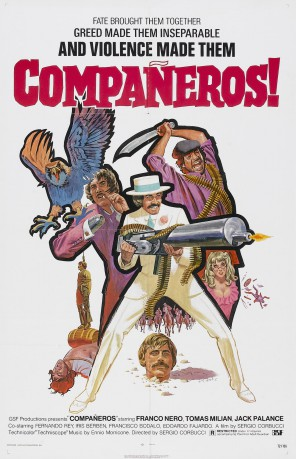
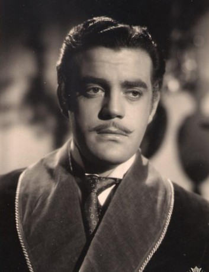

#5693 Laßt uns töten, Companeros
Alternativ: Companeros (Englischer Titel)
 
 IMDB-Wertung: 7.5 / 10
IMDB-Wertung: 7.5 / 10  Metascore: 0
Metascore: 0 
Arms dealer Yolaf Peterson aims to make a sale to guerilla Mongo, but the money is locked in a bank safe, the combination known only to Professor Xantos, a prisoner of the Americans. Yolaf agrees to free Xantos, accompanied by reluctant guerilla Basco, but a former business partner of Yolaf's- John 'The Wooden Hand', has other ideas.
Jahr: 1970
Dauer: 119 Minuten
FSK: 18
Land: Italien Studio: Constantin FilmTonspuren:
Untertitel:
Auflösung: 1080p (1920x816) Größe: 6707 MB
Genre: Action, Komödie, Western
Regisseur: Sergio Corbucci
Drehbuch: Javier Fesser
Soundtrack:
Darsteller:
 Franco Nero als Yodlaf Peterson
Franco Nero als Yodlaf Peterson Tomas Milian als El Vasco
Tomas Milian als El Vasco Jack Palance als John
Jack Palance als John Fernando Rey als Prof. Xantos
Fernando Rey als Prof. Xantos Iris Berben als Lola
Iris Berben als Lola- José Bódalo als Gen. Mongo
-  Eduardo Fajardo als Colonel
- Karin Schubert als Zaira
- Gino Pernice als Tourneur
 Álvaro de Luna als John's Henchman
Álvaro de Luna als John's Henchman- Jesús Fernández als Xantista
- Claudio Scarchilli als
- Lorenzo Robledo als Captain Jim
- Giovanni Petti als Border Officer
- Gérard Tichy als Lieutenant
- Gianni Pulone als
- Rafael Albaicín als Mongo Henchman , uncredited
- Simón Arriaga als Mongo Henchman , uncredited
 José Canalejas als Mongo Henchman , uncredited
José Canalejas als Mongo Henchman , uncredited- Ramón Fernández Tejela als Xantista , uncredited
 Tito García als Pepito Tigrero , uncredited
Tito García als Pepito Tigrero , uncredited Víctor Israel als Rosenbloom Henchman with Brown Suit , uncredited
Víctor Israel als Rosenbloom Henchman with Brown Suit , uncredited- José Luis Lizalde als Cantina Barman , uncredited
- José Marco als Fort Yuma Corporal , uncredited
- Antonio Padilla als Mongo Henchman , uncredited
- Joaquín Parra als Patrol Lieutenant , uncredited
Datei: X:\FSK18-Western\Laßt uns töten, Companeros (1970, FSK18, 1920x816).mkv seit 10.03.2017
Festplatte: FSK18
 Es gibt insgesamt 25 Filme in der Gruppe 'FSK18-Western'
Es gibt insgesamt 25 Filme in der Gruppe 'FSK18-Western'